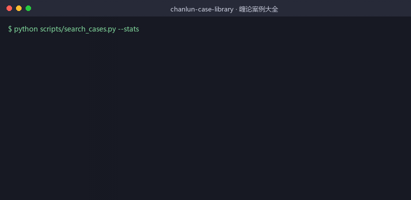
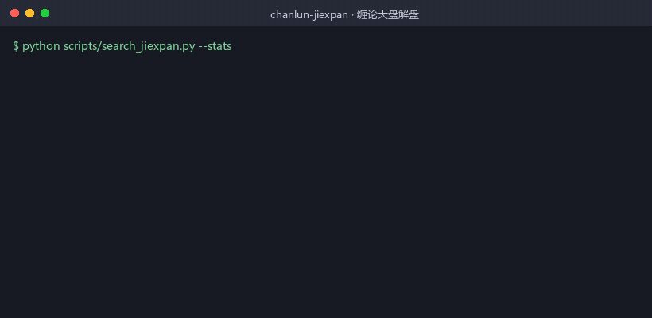
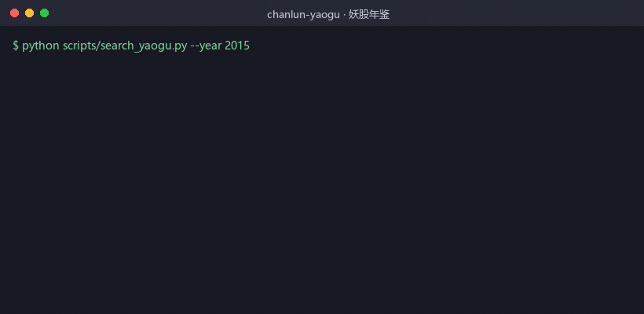
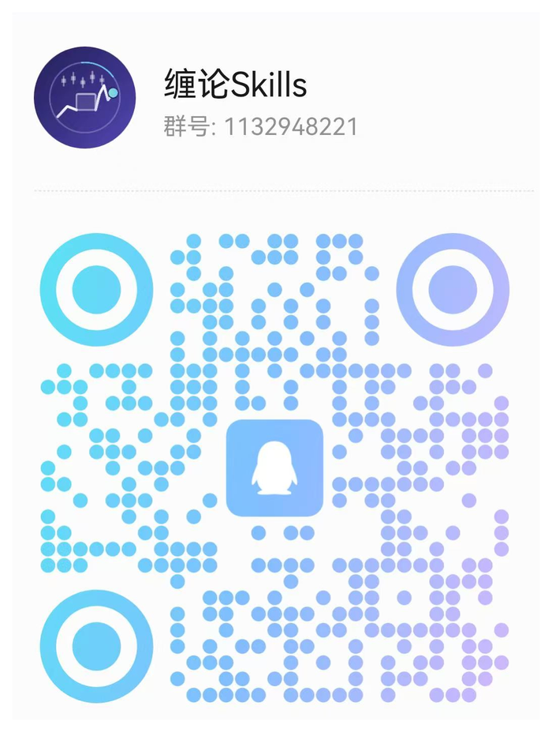

把缠中说禅（缠师）的技术分析教学、佛学禅宗专栏、周末音乐连载，以及 37 年 A 股妖股实算数据，整理成 6 个可被 AI 直接调用的 Skill。
每个 Skill 都是一个标准目录：
SKILL.md —— 技能说明与触发场景（AI 靠它决定何时调用）references/ —— 结构化语料、索引、离线查阅器scripts/ —— 零依赖命令行检索工具，python scripts/xxx.py --stats 即可验证6 个 Skill · 158 个文件 · 约 46MB · 全部离线可用，无任何运行时依赖
三种方式任选其一，全部脚本仅用 Python 标准库，无需 pip install
# 安装全部 6 个 Skill npx skills add chanlun-skills/chan-skills # 只安装某一个 npx skills add chanlun-skills/chan-skills --skill chanlun-sanmai
git clone https://github.com/chanlun-skills/chan-skills.git cd chan-skills # Claude Code 全局安装 cp -r chanlun-* ~/.claude/skills/ # 或项目级安装 cp -r chanlun-* ./.claude/skills/
| 平台 | 位置 |
|---|---|
| SkillsMP | skillsmp.com（自动索引 GitHub 仓库） |
| skills.sh | npx skills add 官方目录，装机量计入排行 |
| 腾讯 SkillHub | skillhub.tencent.com（国内高速镜像） |
| ClawHub | npx clawhub install |
cd chan-skills/chanlun-case-library python scripts/search_cases.py --stats
以下动图均为真实运行各 Skill 附带的零依赖检索脚本所得，非示意图。



cd chanlun-case-library && python scripts/search_cases.py --stats
每个 Skill 都有明确的触发场景，AI 靠 SKILL.md 判断何时调用
| 你问 | 用哪个 Skill |
|---|---|
| 「缠师当年怎么分析中国联通的？」 | 案例大全 → 247 条案例时间线 |
| 「这个位置算不算三买？五步怎么走？」 | 三买汇集 → 判定链 + 确认/否认双案例 |
| 「2007 年 5 月 30 日缠师怎么判断大盘的？」 | 大盘解盘 → 530 当日三来源交叉印证 |
| 「缠师说的『缘起』是什么意思，出处在哪？」 | 佛学与禅宗 → 概念索引定位原文 |
| 「第 5 期音乐会放的什么曲子？缠师怎么评的？」 | 周末音乐会 → 42 期节目单与乐评 |
| 「2015 年最猛的妖股是哪些，实算涨幅多少？」 | 妖股年鉴 → 37 年年份卡 + 日线实算 |
案例复盘 · 三买研讨 · 工具共创 · 疑难解答

两个入口都是永久有效：QQ 群二维码本身不过期；企业微信群用的是「加入群聊」活码，群满 200 人会自动建新群，码不会失效。
扫不出？直接用群号 1132948221 —— 在 QQ 里搜索群号或「添加群」即可。
缠论量化 —— 缠论内容整理者，长期做缠论体系的结构化与数据化
知乎：缠论量化
zhihu.com/people/chanlunquant
缠论资料大全（夸克网盘 · 免费分享）
pan.quark.cn/s/f766d88b7331
本仓库所有内容仅为缠论技术理论学习与历史行情复盘